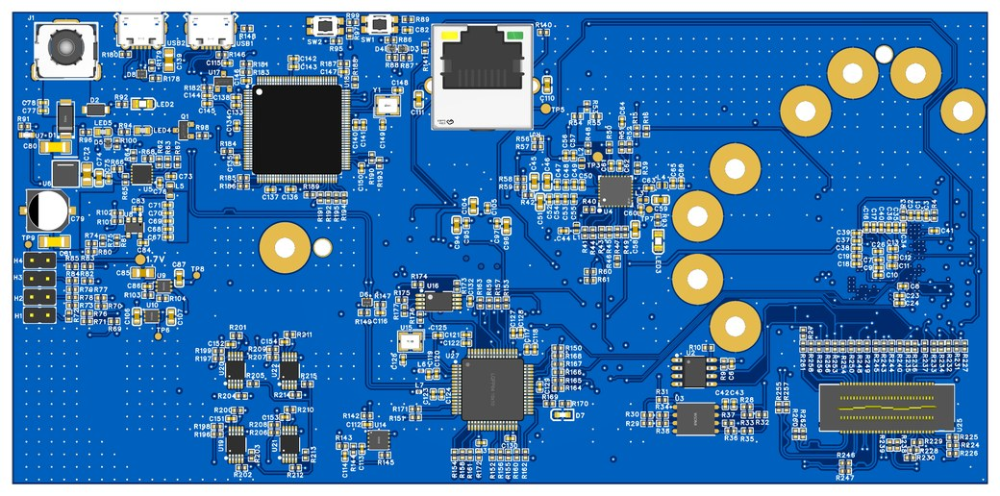

RF · PCB
77 GHz automotive radar board
A carrier board for TI's AWR2944 radar chip. Four transmit and four receive antennas laid out on Rogers laminate, power brought up in the right order in hardware, CAN FD and Ethernet to the car.
- AWR2944
- Rogers
- 4T4R MIMO
- EasyEDA